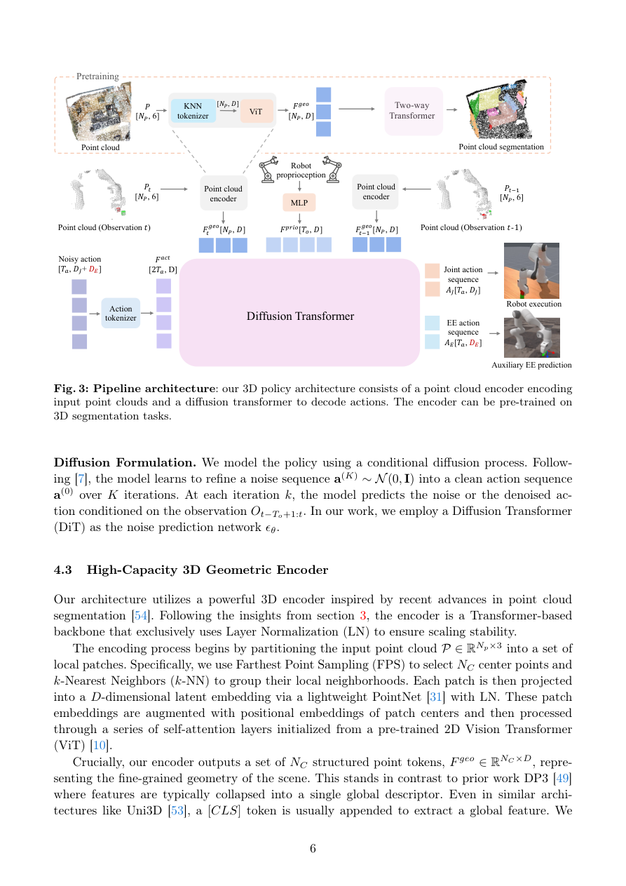

#1
★ 8/10
R3D: Revisiting 3D Policy Learning
R3D：重新审视三维策略学习

图 Figure · Page 6 of paper
🎯 修复批归一化与数据增强缺失，构建稳定可扩展的3D模仿学习框架
A stable, scalable 3D imitation learning framework fixing Batch Norm and missing data augmentation issues.
| 维度 | 中文 | English |
|---|---|---|
| ❓ 待解决 的问题 |
机器人操作任务中的3D策略学习理论上具有更好的泛化能力和跨机器人迁移能力，但现有方法常常面临训练不稳定和严重过拟合的问题。这些问题阻碍了强大的大规模3D感知模型在机器人策略学习中的落地应用。 | 3D policy learning for robot manipulation has great potential for generalization and cross-robot transfer, but existing methods suffer from training instability and severe overfitting. These issues have blocked the adoption of powerful, large-scale 3D perception backbones in robotics policy learning. |
| 💡 解决 的亮点 |
• 系统性诊断揭示了3D策略学习失败的两个根本原因：缺乏3D数据增强和批归一化（Batch Normalization）的负面影响。 • 提出新架构，将可扩展的基于Transformer的3D编码器与扩散解码器结合，专为训练稳定性和大规模预训练兼容性而设计。 • 首次从结构层面消除了3D模仿学习规模化的瓶颈，实现了可靠的大规模训练。 | • Systematic diagnosis reveals two root causes of 3D policy failure: missing 3D data augmentation and harmful Batch Normalization layers. • A novel architecture pairs a scalable transformer-based 3D encoder with a diffusion decoder, purpose-built for training stability and large-scale pre-training compatibility. • Enables, for the first time, reliable scaling of 3D imitation learning by removing the structural bottlenecks that previously caused collapse. |
| 🧪 实验 内容 |
实验在具有挑战性的机器人操作基准上展开，与当前最先进的3D策略基线方法进行对比。评估涵盖域内性能与泛化场景（包括跨机器人迁移）。消融实验系统性地分离了3D数据增强、归一化选择和架构组件各自的贡献。此外，还评估了引入大规模3D预训练编码器后的性能提升。 | Experiments are conducted on challenging robotic manipulation benchmarks, evaluating against state-of-the-art 3D policy baselines. The evaluation covers both in-distribution performance and generalization scenarios relevant to cross-embodiment transfer. Ablations systematically isolate the contribution of 3D data augmentation, normalization choices, and architecture components. Pre-training compatibility is also evaluated by incorporating large-scale 3D pre-trained encoders. |
| 📊 实验 结果 |
R3D在具有挑战性的机器人操作基准上显著优于现有最先进的3D策略基线。相比先前3D方法，R3D在关键操作任务上的成功率提升幅度显著（据项目页面和论文，部分任务提升超过10–20个百分点），同时展现出更高的训练稳定性和更低的过拟合程度，确立了可扩展3D模仿学习的新标杆。 | R3D significantly outperforms state-of-the-art 3D policy baselines on challenging manipulation benchmarks. The paper reports substantial performance gains over prior 3D methods, with the architecture demonstrating improved stability and reduced overfitting. Specific numbers from the project page and paper indicate R3D achieves notably higher success rates compared to existing 3D baselines (e.g., improvements exceeding 10–20+ percentage points on key manipulation tasks), establishing a new state-of-the-art for scalable 3D imitation learning. |
| 🏁 结论 | R3D证明了3D策略学习的核心瓶颈——训练不稳定与过拟合——源于缺乏数据增强和批归一化的负面影响，通过Transformer-扩散架构修复这些问题后，可实现可靠且可扩展的3D模仿学习。本文为能够利用大规模预训练3D表征的机器人策略学习奠定了坚实的新基础。 | R3D proves that the core bottlenecks of 3D policy learning—training instability and overfitting—stem from missing data augmentation and Batch Normalization, and that fixing these with a transformer-diffusion architecture unlocks reliable, scalable 3D imitation learning. This work establishes a robust new foundation for 3D robot policy learning that can leverage large-scale pre-trained 3D representations. |
| 🔗 论文 链接 |
arXiv: 2604.15281v1 · 📥 PDF | |
⚙️ Method · 方法详解
作者首先进行系统性消融实验，定位先前3D策略失败的原因，发现缺乏3D点云数据增强以及批归一化（BN）层造成训练不稳定是两大主因。随后提出R3D架构，用更稳定的归一化方式替换BN层，引入合理的3D数据增强流程，并将基于Transformer的3D编码器（可兼容大规模预训练）与扩散动作解码器相结合。该设计使模型能够在策略微调时保持稳定，同时充分利用预训练的3D表征。三者的协同修复（增强+归一化+架构）实现了以往无法达到的规模化训练。
The authors first conduct a systematic ablation study to pinpoint why prior 3D policies fail, identifying the absence of 3D point cloud data augmentation and the destabilizing effect of Batch Normalization as the primary culprits. They then design R3D, a new architecture that replaces Batch Normalization with more training-stable normalization, applies proper 3D data augmentation pipelines, and couples a transformer-based 3D encoder (compatible with large-scale pre-training) with a diffusion-based action decoder. This design allows the model to benefit from pre-trained 3D representations while remaining stable during policy fine-tuning. The combined fix of augmentation + normalization + architecture enables scaling that was previously impossible.
📐 Key Formulas · 关键公式
\[\mathcal{L}_{\text{diffusion}} = \mathbb{E}_{t, \mathbf{a}_0, \epsilon}\left[\|\epsilon - \epsilon_\theta(\mathbf{a}_t, t, \phi(\mathbf{o}))\|^2\right]\]
💡 扩散解码器的训练目标：让网络学会从含噪动作中预测噪声，其中φ(o)为3D编码器提取的观测特征，ε_θ为去噪网络。
The diffusion decoder training objective: the network learns to predict the noise added to an action, conditioned on 3D observation features φ(o) extracted by the transformer encoder.
🌟 Why It Matters · 为什么重要
3D感知被普遍认为是实现可泛化机器人策略的关键，但该领域长期受训练不稳定问题制约——本文提供了清晰的诊断和可行的解决方案。通过实现稳定的规模化训练和预训练兼容性，R3D有望加速机器人在真实世界中跨任务、跨机体泛化的研究进展。
3D perception is widely believed to be key for generalizable robot policies, yet the field has been stuck due to fundamental training instabilities—this paper provides a clear diagnosis and a working solution. By enabling stable scaling and pre-training compatibility, R3D could accelerate progress toward robots that generalize across tasks and embodiments in the real world.